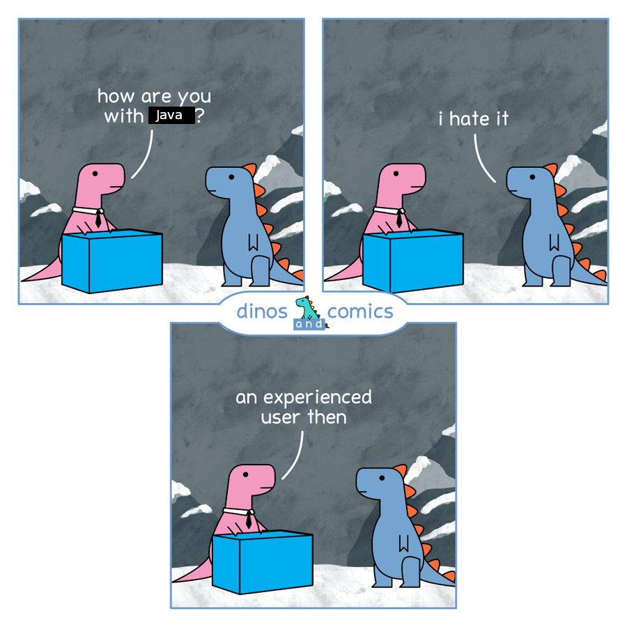

To preface this, I really love Java. It's not that I love to hate it. Although I do definitely hate it. But I don't want to hate it.
When I was asked to help come up with interview questions for new developers we're hiring at work, I responded with two.
1. What is your favorite programming language, and why?
2. Why do you hate your favorite language? Please elaborate at length.I propose that the way to measure the quality of a developer is the length of time they talk, and the amount of technical detail that they go into about why they hate their favorite language.
Now, here is my rant about why I hate Java, which eventually led me to start work on Daisho.

Java was my first programming language, and also the one that sent me over the deep end. Unlike many, I consider Java a very beautiful language. It's verbose, but that never bothered me. That verbosity allows you to write very good APIs. It also has support for protocols (interfaces), which interact with closures and lambda expressions in the language in a way that I consider incredibly beautiful.
Most people love to hate Java. I think the criticisms that most people have about the language are unjustified. However, the language is a swiss cheese blend of design flaws which ultimately undermine both its soundness and its utility.
1. Runtime JIT code injection and reflection hinders optimizations.
2. As memory use increases, garbage collection time increases exponentially.
3. Object headers take up an unnecessarily massive amount of memory.
4. Everything is an object, and every object always goes on the heap.You'll notice that these problems compound on each other. This is all very slow, but not egregious. It's exactly the trade-off that we signed up for when we decided to write our program in Java. But, unfortunately it gets worse. When the Java runtime does garbage collection, it causes the program to hang for a small, but noticeable amount of time. This is what we signed up for too. It's the price of not manually managing memory. But it's not without its unintuitive and hidden dangers.
One day I wrote a Java program to read a database into memory and do some statistics. It was slow, as Java often is, but it worked. Then I added some more data to the database. I had about 3% of my (massive) heap left to work with, and I wasn't running out of memory. It still should work, right? Unfortunately, no.
This happened because the Java garbage collector only takes out the trash once it's full. And, just like in real life, it takes about the same amount of time to walk a bag to the curb when it's completely full as when the bag is only halfway full. So, to be optimal, it waits until the heap is completely full. The issue that the available space in the "trash can" (heap) in this metaphor is only the size of a thimble. The rest of the can is full of our database, so once we fill up that thimble we have to walk the whole can to the curb and back to dispose of the contents of the thimble. The smaller our thimble is, we have to take exponentially more trips.
After profiling my program, I found that the Java runtime was pegging my memory bandwidth at 100% and spending more than 99% of its time on garbage collection, and less than 1% of its time actually executing my program. When it was using only 40% of its time on collecting garbage, the program was still usable.
The frustrating thing is that this is not an unconventional use case. I wouldn't say that my program is disqualified from being "normal." There are plenty of programs that have to store a lot of data in memory for most of their execution. That Java cannot handle such a use case bothers me. Yes, reference counting JVM garbage collectors exist, but for a long time they were considered inefficient and very bad on average. You are forced to make the painful choice between "bad average case" and "catastrophic worst case."
Like in other languages, writing blazingly fast Java code is very straightforward. Modern hardware, even cheap hardware, is already faster than you could possibly comprehend. If you want fast software, all you have to do is not do things that are slow. There are three main things that are slow in Java.
1. Creating objects (future garbage)
2. Collecting gabrage
3. Loading classes
4. Using reflection1. Find creative ways to not use objects (reduce, reuse, recycle).
* Don't get your objects from constructors, use factories.
* Build pools of objects to reuse, return them from the factories.
* Have a "free()" method that adds the object to the pool.
* We just wrote a manually managed memory allocator in Java.
* We have to do this for every commonly used non-static class.
* Java is known for this design pattern. This is why.
* It's no secret that this design pattern fucking sucks.
2. Null all references to objects you no longer need immediately.
* A variable passing out of scope does this automatically.
* Otherwise, it's worth doing the extra work.
3. Spend hours testing and tweaking JVM settings.
* Choose the right garbage collector for the job.
* Allocate as much memory for the heap as you can.
* Unfortunately, most developers will squander this resource.
4. Don't use massive bloated frameworks.
* Startup times suffer the most from this.
5. Don't use reflection.
* Speed is a reason, but...
* Please for the love of god don't use it, it's so unholy.Instead of memory leaks (Java does actually have true memory leaks, but that's another story), Java has something more like "performance leaks." If you do not keep a mental model of the object graph, you may forget to allow a some objects to be collected. Unless you allow them to be collected, they will continue to take up space in your heap, meaning you must garbage collect more often. Java is known for its performance nightmares and software hellscapes, and this is the most common cause.
Since Java gives you less freedom to do so, optimizing Java is almost never about optimizing cache, or even writing fast algorithms. In C, you can trick the compiler into generating better code by informing it of optimizations that it can make. You can physically lay out your memory so it's already hot in cache by the time it's needed. In Java, there are no fancy tricks. You should assume everything is a cache miss anyway, and just focus on reducing memory allocations and the frequency at which garbage has to be collected.
My advice is "If you want fast Java, don't use objects." Did you know that Java is an object oriented programming language? That sounds an awful lot like "Don't use Java if you want fast code." Unfortunately, that logic is sound.
However, there's no reason Java needs to be so inefficient. The aspects of the language that I think are most important are all design patterns in other languages as well. In terms of raw features, Java isn't at all special. Other languages, like C++, incorporate the same features at far less cost in terms of performace. All this garbage collection related stuff is unfortunate baggage, but in my opinion the things that makes Java great are interfaces and the Collections API. That's very doable in C, there's no reason why we should have to tolerate poor performance to get access to high level language features.
In fact, not only are they features or design patterns in other languages, they're C design patterns. Suddenly I had an idea. Create a higher level programming language that takes in code that abuses templates, protocols, lambda expressions, collections, and streams, and spits out optimized C that implements those design patterns.
I thought to myself "I can do better." And now I'm trying to make that a reality.